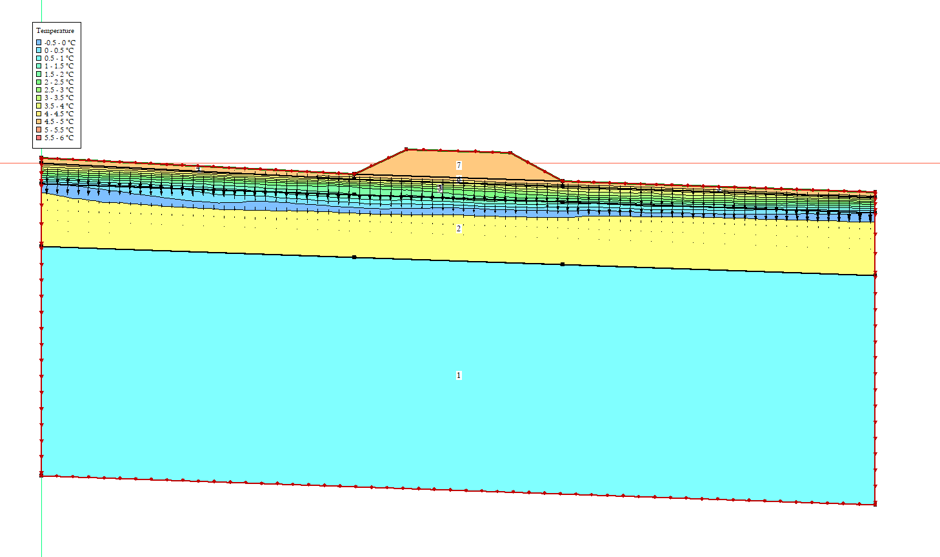

GeoStudioCold-Region Embankment Thermal-Seepage Behaviour
Qinghai-Tibet Plateau, China
Built a coupled seepage-thermal numerical model in GeoStudio (SEEP/W & TEMP/W) to simulate freeze-thaw cycles, validating model accuracy against published field results.
Click for Details